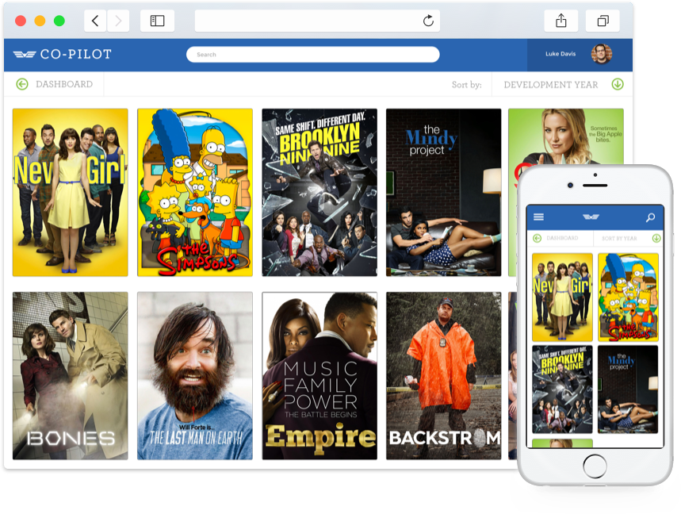

Co-Pilot
I led the design of FOX TV’s Internal tool Co-Pilot over a two week sprint in March 2015. I was responsible for the user experience across the entire platform from concept to development.
The Challenge
"Improve an existing legacy application used by FOX TV’s Programming Execs and turn it into a modern, fully functioning web application."
Co-Pilot is an internal tool used by FOX TV and its associates to track performance and scheduling for all of its home-grown TV series. It had outgrown its initial use case when we started development, and it was an aging .NET application with a poor User Experience.
An initial redesign by a previous designer hadn’t gone down well with stakeholders and I was asked to complete a design sprint in two weeks to recreate the initial architecture used by the designer and turn the app into something more beautiful and usable.
The Approach
With the initial Information architecture already in place and a user flow that all stakeholders agreed upon, I set about redesigning the layout and concept of Co-Pilot. Using an iPad as my base device - the company had issued one to each stakeholder - I had a week to turn in a revised design for approval and then started refining the designs, as well as creating a mobile-friendly layout for stakeholders to use on the go.
The Product
Hello, Co-Pilot
Co-Pilot is a place for everyone involved at FOX TV to come and learn about the traction, outcomes and targets set for its programming.
Architecture
The first problem I found with Co-Pilot is that their programming page was far too complex. By switching to a tabbed layout I made sure that all of the information was only a click or two away. From casting details to social buzz and script updates, each of these sections was quickly accessible.